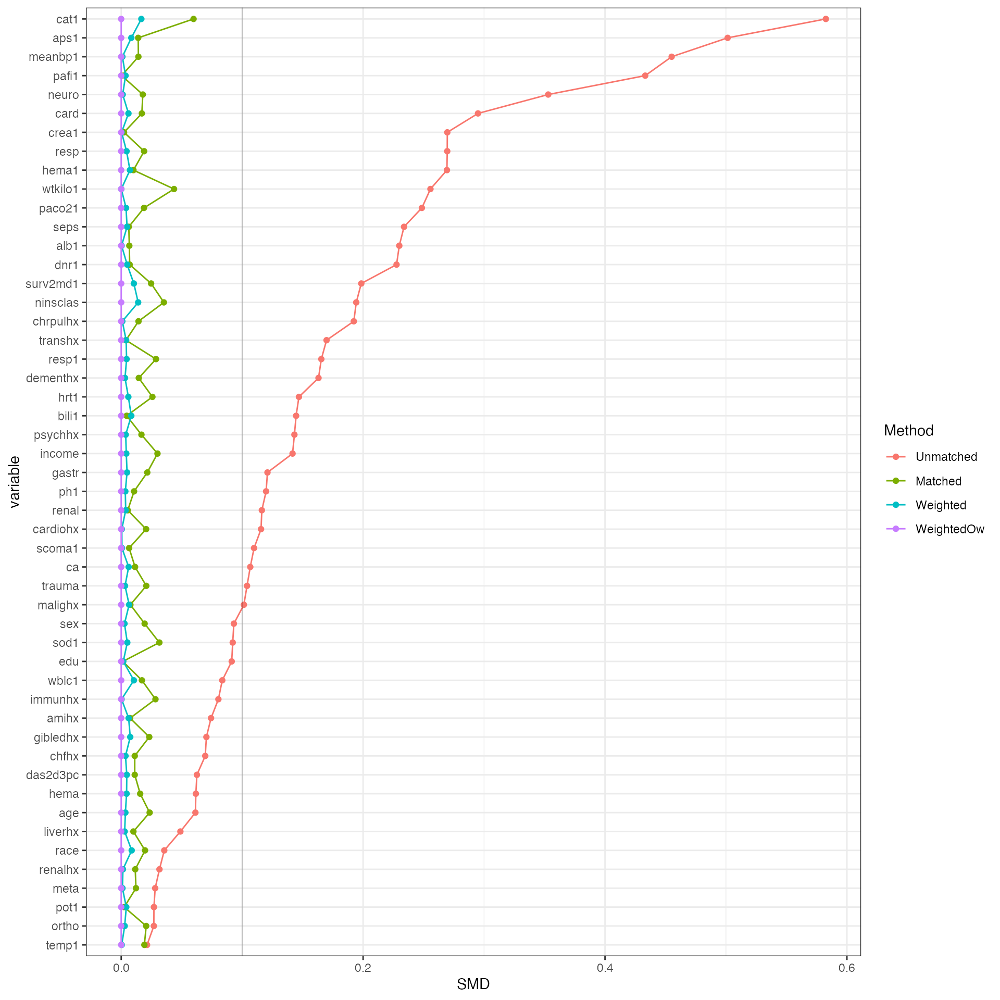

The standardized (mean) difference is a measure of distance between two group means in terms of one or more variables. In practice it is often used as a balance measure of individual covariates before and after propensity score matching. As it is standardized, comparison across variables on different scales is possible. For definitions see http://www.ncbi.nlm.nih.gov/pmc/articles/PMC3144483/#s11title .
Standardized mean differences can be easily calculated with tableone. All standardized mean differences in this package are absolute values, thus, there is no directionality.
The right heart catheterization dataset is available at http://biostat.mc.vanderbilt.edu/wiki/Main/DataSets . This dataset was originally used in Connors et al. JAMA 1996;276:889-897, and has been made publicly available.
## Right heart cath dataset rhc <- read.csv("http://biostat.mc.vanderbilt.edu/wiki/pub/Main/DataSets/rhc.csv")
Out of the 50 covariates, 32 have standardized mean differences of greater than 0.1, which is often considered the sign of important covariate imbalance (http://www.ncbi.nlm.nih.gov/pmc/articles/PMC3144483/#s11title ).
## Covariates vars <- c("age","sex","race","edu","income","ninsclas","cat1","das2d3pc","dnr1", "ca","surv2md1","aps1","scoma1","wtkilo1","temp1","meanbp1","resp1", "hrt1","pafi1","paco21","ph1","wblc1","hema1","sod1","pot1","crea1", "bili1","alb1","resp","card","neuro","gastr","renal","meta","hema", "seps","trauma","ortho","cardiohx","chfhx","dementhx","psychhx", "chrpulhx","renalhx","liverhx","gibledhx","malighx","immunhx", "transhx","amihx") ## Construct a table tabUnmatched <- CreateTableOne(vars = vars, strata = "swang1", data = rhc, test = FALSE) ## Show table with SMD print(tabUnmatched, smd = TRUE)
Stratified by swang1
No RHC RHC SMD
n 3551 2184
age (mean (SD)) 61.76 (17.29) 60.75 (15.63) 0.061
sex = Male (%) 1914 (53.9) 1278 (58.5) 0.093
race (%) 0.036
black 585 (16.5) 335 (15.3)
other 213 ( 6.0) 142 ( 6.5)
white 2753 (77.5) 1707 (78.2)
edu (mean (SD)) 11.57 (3.13) 11.86 (3.16) 0.091
income (%) 0.142
> $50k 257 ( 7.2) 194 ( 8.9)
$11-$25k 713 (20.1) 452 (20.7)
$25-$50k 500 (14.1) 393 (18.0)
Under $11k 2081 (58.6) 1145 (52.4)
ninsclas (%) 0.194
Medicaid 454 (12.8) 193 ( 8.8)
Medicare 947 (26.7) 511 (23.4)
Medicare & Medicaid 251 ( 7.1) 123 ( 5.6)
No insurance 186 ( 5.2) 136 ( 6.2)
Private 967 (27.2) 731 (33.5)
Private & Medicare 746 (21.0) 490 (22.4)
cat1 (%) 0.583
ARF 1581 (44.5) 909 (41.6)
CHF 247 ( 7.0) 209 ( 9.6)
Cirrhosis 175 ( 4.9) 49 ( 2.2)
Colon Cancer 6 ( 0.2) 1 ( 0.0)
Coma 341 ( 9.6) 95 ( 4.3)
COPD 399 (11.2) 58 ( 2.7)
Lung Cancer 34 ( 1.0) 5 ( 0.2)
MOSF w/Malignancy 241 ( 6.8) 158 ( 7.2)
MOSF w/Sepsis 527 (14.8) 700 (32.1)
das2d3pc (mean (SD)) 20.37 (5.48) 20.70 (5.03) 0.063
dnr1 = Yes (%) 499 (14.1) 155 ( 7.1) 0.228
ca (%) 0.107
Metastatic 261 ( 7.4) 123 ( 5.6)
No 2652 (74.7) 1727 (79.1)
Yes 638 (18.0) 334 (15.3)
surv2md1 (mean (SD)) 0.61 (0.19) 0.57 (0.20) 0.198
aps1 (mean (SD)) 50.93 (18.81) 60.74 (20.27) 0.501
scoma1 (mean (SD)) 22.25 (31.37) 18.97 (28.26) 0.110
wtkilo1 (mean (SD)) 65.04 (29.50) 72.36 (27.73) 0.256
temp1 (mean (SD)) 37.63 (1.74) 37.59 (1.83) 0.021
meanbp1 (mean (SD)) 84.87 (38.87) 68.20 (34.24) 0.455
resp1 (mean (SD)) 28.98 (13.95) 26.65 (14.17) 0.165
hrt1 (mean (SD)) 112.87 (40.94) 118.93 (41.47) 0.147
pafi1 (mean (SD)) 240.63 (116.66) 192.43 (105.54) 0.433
paco21 (mean (SD)) 39.95 (14.24) 36.79 (10.97) 0.249
ph1 (mean (SD)) 7.39 (0.11) 7.38 (0.11) 0.120
wblc1 (mean (SD)) 15.26 (11.41) 16.27 (12.55) 0.084
hema1 (mean (SD)) 32.70 (8.79) 30.51 (7.42) 0.269
sod1 (mean (SD)) 137.04 (7.68) 136.33 (7.60) 0.092
pot1 (mean (SD)) 4.08 (1.04) 4.05 (1.01) 0.027
crea1 (mean (SD)) 1.92 (2.03) 2.47 (2.05) 0.270
bili1 (mean (SD)) 2.00 (4.43) 2.71 (5.33) 0.145
alb1 (mean (SD)) 3.16 (0.67) 2.98 (0.93) 0.230
resp = Yes (%) 1481 (41.7) 632 (28.9) 0.270
card = Yes (%) 1007 (28.4) 924 (42.3) 0.295
neuro = Yes (%) 575 (16.2) 118 ( 5.4) 0.353
gastr = Yes (%) 522 (14.7) 420 (19.2) 0.121
renal = Yes (%) 147 ( 4.1) 148 ( 6.8) 0.116
meta = Yes (%) 172 ( 4.8) 93 ( 4.3) 0.028
hema = Yes (%) 239 ( 6.7) 115 ( 5.3) 0.062
seps = Yes (%) 515 (14.5) 516 (23.6) 0.234
trauma = Yes (%) 18 ( 0.5) 34 ( 1.6) 0.104
ortho = Yes (%) 3 ( 0.1) 4 ( 0.2) 0.027
cardiohx (mean (SD)) 0.16 (0.37) 0.20 (0.40) 0.116
chfhx (mean (SD)) 0.17 (0.37) 0.19 (0.40) 0.069
dementhx (mean (SD)) 0.12 (0.32) 0.07 (0.25) 0.163
psychhx (mean (SD)) 0.08 (0.27) 0.05 (0.21) 0.143
chrpulhx (mean (SD)) 0.22 (0.41) 0.14 (0.35) 0.192
renalhx (mean (SD)) 0.04 (0.20) 0.05 (0.21) 0.032
liverhx (mean (SD)) 0.07 (0.26) 0.06 (0.24) 0.049
gibledhx (mean (SD)) 0.04 (0.19) 0.02 (0.16) 0.070
malighx (mean (SD)) 0.25 (0.43) 0.20 (0.40) 0.101
immunhx (mean (SD)) 0.26 (0.44) 0.29 (0.45) 0.080
transhx (mean (SD)) 0.09 (0.29) 0.15 (0.36) 0.170
amihx (mean (SD)) 0.03 (0.17) 0.04 (0.20) 0.074## Count covariates with important imbalance addmargins(table(ExtractSmd(tabUnmatched) > 0.1))
FALSE TRUE Sum
18 32 50 Usually a logistic regression model is used to estimate individual propensity scores. The model here is taken from “How To Use Propensity Score Analysis” (https://www.mc.vanderbilt.edu/crc/workshop_files/2008-04-11.pdf ). Predicted probabilities of being assigned to right heart catherterization, being assigned no right heart catherterization, being assigned to the true assignment, as well as the smaller of the probabilities of being assigned to right heart catherterization or no right heart catherterization are calculated for later use in propensity score matching and weighting.
rhc$swang1 <- factor(rhc$swang1, levels = c("No RHC", "RHC")) ## Fit model psModel <- glm(formula = swang1 ~ age + sex + race + edu + income + ninsclas + cat1 + das2d3pc + dnr1 + ca + surv2md1 + aps1 + scoma1 + wtkilo1 + temp1 + meanbp1 + resp1 + hrt1 + pafi1 + paco21 + ph1 + wblc1 + hema1 + sod1 + pot1 + crea1 + bili1 + alb1 + resp + card + neuro + gastr + renal + meta + hema + seps + trauma + ortho + cardiohx + chfhx + dementhx + psychhx + chrpulhx + renalhx + liverhx + gibledhx + malighx + immunhx + transhx + amihx, family = binomial(link = "logit"), data = rhc) ## Predicted probability of being assigned to RHC rhc$pRhc <- predict(psModel, type = "response") ## Predicted probability of being assigned to no RHC rhc$pNoRhc <- 1 - rhc$pRhc ## Predicted probability of being assigned to the ## treatment actually assigned (either RHC or no RHC) rhc$pAssign <- NA rhc$pAssign[rhc$swang1 == "RHC"] <- rhc$pRhc[rhc$swang1 == "RHC"] rhc$pAssign[rhc$swang1 == "No RHC"] <- rhc$pNoRhc[rhc$swang1 == "No RHC"] ## Smaller of pRhc vs pNoRhc for matching weight rhc$pMin <- pmin(rhc$pRhc, rhc$pNoRhc)
The Matching package can be used for propensity score matching. The logit of propensity score is often used as the matching scale, and the matchign caliper is often 0.2 \(\times\) SD(logit(PS)). See http://www.ncbi.nlm.nih.gov/pmc/articles/PMC3144483/#s5title for suggestions. After matching, all the standardized mean differences are below 0.1.
listMatch <- Match(Tr = (rhc$swang1 == "RHC"), # Need to be in 0,1 ## logit of PS,i.e., log(PS/(1-PS)) as matching scale X = log(rhc$pRhc / rhc$pNoRhc), ## 1:1 matching M = 1, ## caliper = 0.2 * SD(logit(PS)) caliper = 0.2, replace = FALSE, ties = TRUE, version = "fast") ## Extract matched data rhcMatched <- rhc[unlist(listMatch[c("index.treated","index.control")]), ] ## Construct a table tabMatched <- CreateTableOne(vars = vars, strata = "swang1", data = rhcMatched, test = FALSE) ## Show table with SMD print(tabMatched, smd = TRUE)
Stratified by swang1
No RHC RHC SMD
n 1563 1563
age (mean (SD)) 60.96 (17.29) 60.57 (15.71) 0.024
sex = Male (%) 878 (56.2) 893 (57.1) 0.019
race (%) 0.020
black 236 (15.1) 247 (15.8)
other 101 ( 6.5) 99 ( 6.3)
white 1226 (78.4) 1217 (77.9)
edu (mean (SD)) 11.78 (3.24) 11.78 (3.16) 0.001
income (%) 0.030
> $50k 136 ( 8.7) 124 ( 7.9)
$11-$25k 330 (21.1) 336 (21.5)
$25-$50k 255 (16.3) 262 (16.8)
Under $11k 842 (53.9) 841 (53.8)
ninsclas (%) 0.035
Medicaid 156 (10.0) 152 ( 9.7)
Medicare 366 (23.4) 371 (23.7)
Medicare & Medicaid 89 ( 5.7) 94 ( 6.0)
No insurance 79 ( 5.1) 89 ( 5.7)
Private 509 (32.6) 498 (31.9)
Private & Medicare 364 (23.3) 359 (23.0)
cat1 (%) 0.060
ARF 707 (45.2) 679 (43.4)
CHF 172 (11.0) 176 (11.3)
Cirrhosis 45 ( 2.9) 47 ( 3.0)
Colon Cancer 2 ( 0.1) 1 ( 0.1)
Coma 83 ( 5.3) 76 ( 4.9)
COPD 47 ( 3.0) 57 ( 3.6)
Lung Cancer 4 ( 0.3) 5 ( 0.3)
MOSF w/Malignancy 127 ( 8.1) 128 ( 8.2)
MOSF w/Sepsis 376 (24.1) 394 (25.2)
das2d3pc (mean (SD)) 20.52 (5.46) 20.58 (5.08) 0.011
dnr1 = Yes (%) 127 ( 8.1) 130 ( 8.3) 0.007
ca (%) 0.011
Metastatic 102 ( 6.5) 98 ( 6.3)
No 1188 (76.0) 1194 (76.4)
Yes 273 (17.5) 271 (17.3)
surv2md1 (mean (SD)) 0.58 (0.20) 0.59 (0.20) 0.025
aps1 (mean (SD)) 57.52 (19.49) 57.25 (19.68) 0.014
scoma1 (mean (SD)) 19.02 (29.50) 18.83 (28.25) 0.007
wtkilo1 (mean (SD)) 69.56 (26.09) 70.72 (27.19) 0.044
temp1 (mean (SD)) 37.66 (1.89) 37.62 (1.74) 0.019
meanbp1 (mean (SD)) 72.59 (34.94) 73.09 (35.73) 0.014
resp1 (mean (SD)) 28.45 (13.84) 28.05 (14.15) 0.029
hrt1 (mean (SD)) 116.66 (42.90) 117.73 (40.26) 0.026
pafi1 (mean (SD)) 211.47 (109.22) 211.43 (107.97) <0.001
paco21 (mean (SD)) 37.21 (10.47) 37.42 (11.51) 0.019
ph1 (mean (SD)) 7.39 (0.11) 7.39 (0.11) 0.011
wblc1 (mean (SD)) 15.71 (11.89) 15.92 (13.00) 0.017
hema1 (mean (SD)) 30.83 (8.03) 30.91 (7.55) 0.010
sod1 (mean (SD)) 136.40 (7.86) 136.64 (7.43) 0.032
pot1 (mean (SD)) 4.04 (1.03) 4.05 (0.99) 0.002
crea1 (mean (SD)) 2.28 (2.31) 2.28 (1.96) 0.002
bili1 (mean (SD)) 2.53 (5.48) 2.55 (5.09) 0.005
alb1 (mean (SD)) 3.04 (0.70) 3.04 (0.96) 0.007
resp = Yes (%) 533 (34.1) 519 (33.2) 0.019
card = Yes (%) 612 (39.2) 599 (38.3) 0.017
neuro = Yes (%) 102 ( 6.5) 109 ( 7.0) 0.018
gastr = Yes (%) 278 (17.8) 291 (18.6) 0.022
renal = Yes (%) 92 ( 5.9) 94 ( 6.0) 0.005
meta = Yes (%) 70 ( 4.5) 74 ( 4.7) 0.012
hema = Yes (%) 103 ( 6.6) 97 ( 6.2) 0.016
seps = Yes (%) 328 (21.0) 332 (21.2) 0.006
trauma = Yes (%) 15 ( 1.0) 12 ( 0.8) 0.021
ortho = Yes (%) 2 ( 0.1) 1 ( 0.1) 0.021
cardiohx (mean (SD)) 0.21 (0.41) 0.20 (0.40) 0.021
chfhx (mean (SD)) 0.20 (0.40) 0.20 (0.40) 0.011
dementhx (mean (SD)) 0.08 (0.27) 0.07 (0.26) 0.015
psychhx (mean (SD)) 0.06 (0.23) 0.05 (0.23) 0.017
chrpulhx (mean (SD)) 0.15 (0.36) 0.15 (0.36) 0.014
renalhx (mean (SD)) 0.05 (0.22) 0.05 (0.22) 0.012
liverhx (mean (SD)) 0.07 (0.25) 0.07 (0.26) 0.010
gibledhx (mean (SD)) 0.03 (0.16) 0.03 (0.17) 0.023
malighx (mean (SD)) 0.23 (0.42) 0.23 (0.42) 0.008
immunhx (mean (SD)) 0.29 (0.45) 0.28 (0.45) 0.028
transhx (mean (SD)) 0.12 (0.33) 0.12 (0.33) 0.004
amihx (mean (SD)) 0.03 (0.18) 0.03 (0.17) 0.007## Count covariates with important imbalance addmargins(table(ExtractSmd(tabMatched) > 0.1))
FALSE Sum
50 50 The matching weight method is a weighting analogue to the 1:1 pairwise algorithmic matching (http://www.ncbi.nlm.nih.gov/pubmed/23902694 ). The matching weight is defined as the smaller of the predicted probabilities of receiving or not receiving the treatment over the predicted probability of being assigned to the arm the patient is actually in. After weighting, all the standardized mean differences are below 0.1. The standardized mean differences in weighted data are explained in https://onlinelibrary.wiley.com/doi/10.1002/sim.6607/full .
## Matching weight rhc$mw <- rhc$pMin / rhc$pAssign ## Weighted data rhcSvy <- svydesign(ids = ~ 1, data = rhc, weights = ~ mw) ## Construct a table (This is a bit slow.) tabWeighted <- svyCreateTableOne(vars = vars, strata = "swang1", data = rhcSvy, test = FALSE) ## Show table with SMD print(tabWeighted, smd = TRUE)
Stratified by swang1
No RHC RHC SMD
n 1522.89 1520.27
age (mean (SD)) 60.82 (17.16) 60.77 (15.79) 0.003
sex = Male (%) 875.8 (57.5) 872.3 (57.4) 0.003
race (%) 0.009
black 238.1 (15.6) 235.8 (15.5)
other 94.9 ( 6.2) 97.8 ( 6.4)
white 1189.9 (78.1) 1186.6 (78.1)
edu (mean (SD)) 11.80 (3.17) 11.80 (3.09) 0.002
income (%) 0.004
> $50k 127.1 ( 8.3) 128.4 ( 8.4)
$11-$25k 316.5 (20.8) 317.0 (20.9)
$25-$50k 251.7 (16.5) 250.8 (16.5)
Under $11k 827.6 (54.3) 824.1 (54.2)
ninsclas (%) 0.014
Medicaid 153.7 (10.1) 151.9 (10.0)
Medicare 361.1 (23.7) 369.0 (24.3)
Medicare & Medicaid 91.5 ( 6.0) 91.2 ( 6.0)
No insurance 85.8 ( 5.6) 86.6 ( 5.7)
Private 487.0 (32.0) 482.2 (31.7)
Private & Medicare 343.7 (22.6) 339.3 (22.3)
cat1 (%) 0.017
ARF 685.8 (45.0) 679.9 (44.7)
CHF 160.1 (10.5) 163.2 (10.7)
Cirrhosis 45.0 ( 3.0) 47.0 ( 3.1)
Colon Cancer 0.9 ( 0.1) 1.0 ( 0.1)
Coma 79.4 ( 5.2) 77.4 ( 5.1)
COPD 56.2 ( 3.7) 57.2 ( 3.8)
Lung Cancer 4.2 ( 0.3) 5.0 ( 0.3)
MOSF w/Malignancy 122.4 ( 8.0) 121.5 ( 8.0)
MOSF w/Sepsis 368.9 (24.2) 368.1 (24.2)
das2d3pc (mean (SD)) 20.58 (5.45) 20.56 (5.05) 0.005
dnr1 = Yes (%) 131.5 ( 8.6) 129.2 ( 8.5) 0.005
ca (%) 0.006
Metastatic 98.6 ( 6.5) 98.0 ( 6.4)
No 1160.5 (76.2) 1162.3 (76.5)
Yes 263.7 (17.3) 259.9 (17.1)
surv2md1 (mean (SD)) 0.58 (0.20) 0.58 (0.20) 0.010
aps1 (mean (SD)) 57.30 (19.53) 57.13 (19.73) 0.008
scoma1 (mean (SD)) 19.12 (29.10) 19.10 (28.51) 0.001
wtkilo1 (mean (SD)) 70.19 (26.54) 70.19 (27.30) <0.001
temp1 (mean (SD)) 37.63 (1.88) 37.64 (1.74) <0.001
meanbp1 (mean (SD)) 73.18 (35.48) 73.22 (35.50) 0.001
resp1 (mean (SD)) 28.16 (13.84) 28.10 (14.09) 0.004
hrt1 (mean (SD)) 116.96 (42.74) 116.71 (40.28) 0.006
pafi1 (mean (SD)) 209.93 (107.48) 210.31 (108.23) 0.004
paco21 (mean (SD)) 37.56 (10.80) 37.51 (11.59) 0.004
ph1 (mean (SD)) 7.39 (0.11) 7.39 (0.11) 0.003
wblc1 (mean (SD)) 15.82 (12.03) 15.69 (12.69) 0.010
hema1 (mean (SD)) 30.90 (8.10) 30.95 (7.57) 0.007
sod1 (mean (SD)) 136.54 (7.86) 136.58 (7.38) 0.005
pot1 (mean (SD)) 4.04 (1.04) 4.05 (0.99) 0.004
crea1 (mean (SD)) 2.27 (2.31) 2.27 (1.95) <0.001
bili1 (mean (SD)) 2.50 (5.37) 2.54 (5.15) 0.008
alb1 (mean (SD)) 3.04 (0.70) 3.04 (0.97) <0.001
resp = Yes (%) 516.6 (33.9) 512.6 (33.7) 0.004
card = Yes (%) 582.2 (38.2) 585.6 (38.5) 0.006
neuro = Yes (%) 109.6 ( 7.2) 109.0 ( 7.2) 0.001
gastr = Yes (%) 270.3 (17.8) 272.7 (17.9) 0.005
renal = Yes (%) 89.5 ( 5.9) 90.7 ( 6.0) 0.004
meta = Yes (%) 70.0 ( 4.6) 70.2 ( 4.6) 0.001
hema = Yes (%) 93.5 ( 6.1) 95.0 ( 6.2) 0.004
seps = Yes (%) 325.5 (21.4) 322.0 (21.2) 0.005
trauma = Yes (%) 14.8 ( 1.0) 14.3 ( 0.9) 0.003
ortho = Yes (%) 1.0 ( 0.1) 0.9 ( 0.1) 0.003
cardiohx (mean (SD)) 0.20 (0.40) 0.20 (0.40) <0.001
chfhx (mean (SD)) 0.20 (0.40) 0.20 (0.40) 0.004
dementhx (mean (SD)) 0.08 (0.26) 0.08 (0.26) 0.003
psychhx (mean (SD)) 0.05 (0.23) 0.05 (0.22) 0.004
chrpulhx (mean (SD)) 0.16 (0.36) 0.16 (0.36) 0.001
renalhx (mean (SD)) 0.05 (0.22) 0.05 (0.22) 0.001
liverhx (mean (SD)) 0.07 (0.25) 0.07 (0.25) 0.003
gibledhx (mean (SD)) 0.03 (0.17) 0.03 (0.17) 0.007
malighx (mean (SD)) 0.23 (0.42) 0.23 (0.42) 0.007
immunhx (mean (SD)) 0.28 (0.45) 0.28 (0.45) <0.001
transhx (mean (SD)) 0.12 (0.33) 0.12 (0.33) 0.004
amihx (mean (SD)) 0.03 (0.18) 0.03 (0.18) 0.006## Count covariates with important imbalance addmargins(table(ExtractSmd(tabWeighted) > 0.1))
FALSE Sum
50 50 The overlap weight method is another alternative weighitng method (https://amstat.tandfonline.com/doi/abs/10.1080/01621459.2016.1260466). After weighting, all the standardized mean differences are below 0.1.
## Overlap weight rhc$ow <- (rhc$pAssign * (1 - rhc$pAssign)) / rhc$pAssign ## Weighted data rhcSvyOw <- svydesign(ids = ~ 1, data = rhc, weights = ~ ow) ## Construct a table (This is a bit slow.) tabWeightedOw <- svyCreateTableOne(vars = vars, strata = "swang1", data = rhcSvyOw, test = FALSE) ## Show table with SMD print(tabWeightedOw, smd = TRUE)
Stratified by swang1
No RHC RHC SMD
n 1005.82 1005.82
age (mean (SD)) 60.88 (17.19) 60.88 (15.73) <0.001
sex = Male (%) 574.3 (57.1) 574.3 (57.1) <0.001
race (%) <0.001
black 157.5 (15.7) 157.5 (15.7)
other 62.0 ( 6.2) 62.0 ( 6.2)
white 786.3 (78.2) 786.3 (78.2)
edu (mean (SD)) 11.78 (3.16) 11.78 (3.08) <0.001
income (%) <0.001
> $50k 83.8 ( 8.3) 83.8 ( 8.3)
$11-$25k 208.4 (20.7) 208.4 (20.7)
$25-$50k 163.3 (16.2) 163.3 (16.2)
Under $11k 550.3 (54.7) 550.3 (54.7)
ninsclas (%) <0.001
Medicaid 104.1 (10.4) 104.1 (10.4)
Medicare 242.5 (24.1) 242.5 (24.1)
Medicare & Medicaid 60.7 ( 6.0) 60.7 ( 6.0)
No insurance 57.1 ( 5.7) 57.1 ( 5.7)
Private 315.9 (31.4) 315.9 (31.4)
Private & Medicare 225.5 (22.4) 225.5 (22.4)
cat1 (%) <0.001
ARF 450.0 (44.7) 450.0 (44.7)
CHF 100.3 (10.0) 100.3 (10.0)
Cirrhosis 32.5 ( 3.2) 32.5 ( 3.2)
Colon Cancer 0.7 ( 0.1) 0.7 ( 0.1)
Coma 56.4 ( 5.6) 56.4 ( 5.6)
COPD 43.8 ( 4.4) 43.8 ( 4.4)
Lung Cancer 3.3 ( 0.3) 3.3 ( 0.3)
MOSF w/Malignancy 79.1 ( 7.9) 79.1 ( 7.9)
MOSF w/Sepsis 239.7 (23.8) 239.7 (23.8)
das2d3pc (mean (SD)) 20.57 (5.46) 20.57 (5.02) <0.001
dnr1 = Yes (%) 90.8 ( 9.0) 90.8 ( 9.0) <0.001
ca (%) <0.001
Metastatic 65.7 ( 6.5) 65.7 ( 6.5)
No 767.4 (76.3) 767.4 (76.3)
Yes 172.7 (17.2) 172.7 (17.2)
surv2md1 (mean (SD)) 0.58 (0.20) 0.58 (0.20) <0.001
aps1 (mean (SD)) 56.94 (19.78) 56.94 (19.79) <0.001
scoma1 (mean (SD)) 19.57 (29.46) 19.57 (28.78) <0.001
wtkilo1 (mean (SD)) 69.80 (26.87) 69.80 (27.65) <0.001
temp1 (mean (SD)) 37.63 (1.87) 37.63 (1.74) <0.001
meanbp1 (mean (SD)) 74.12 (36.09) 74.12 (36.18) <0.001
resp1 (mean (SD)) 28.16 (13.90) 28.16 (14.18) <0.001
hrt1 (mean (SD)) 116.54 (42.66) 116.54 (40.48) <0.001
pafi1 (mean (SD)) 211.64 (108.24) 211.64 (109.43) <0.001
paco21 (mean (SD)) 37.76 (11.12) 37.76 (12.09) <0.001
ph1 (mean (SD)) 7.39 (0.11) 7.39 (0.11) <0.001
wblc1 (mean (SD)) 15.84 (12.07) 15.84 (12.94) <0.001
hema1 (mean (SD)) 30.98 (8.17) 30.98 (7.64) <0.001
sod1 (mean (SD)) 136.61 (7.82) 136.61 (7.31) <0.001
pot1 (mean (SD)) 4.05 (1.04) 4.05 (1.00) <0.001
crea1 (mean (SD)) 2.25 (2.30) 2.25 (1.95) <0.001
bili1 (mean (SD)) 2.50 (5.37) 2.50 (5.05) <0.001
alb1 (mean (SD)) 3.05 (0.70) 3.05 (1.05) <0.001
resp = Yes (%) 347.3 (34.5) 347.3 (34.5) <0.001
card = Yes (%) 378.1 (37.6) 378.1 (37.6) <0.001
neuro = Yes (%) 81.0 ( 8.1) 81.0 ( 8.1) <0.001
gastr = Yes (%) 177.6 (17.7) 177.6 (17.7) <0.001
renal = Yes (%) 58.3 ( 5.8) 58.3 ( 5.8) <0.001
meta = Yes (%) 46.3 ( 4.6) 46.3 ( 4.6) <0.001
hema = Yes (%) 62.9 ( 6.2) 62.9 ( 6.2) <0.001
seps = Yes (%) 208.1 (20.7) 208.1 (20.7) <0.001
trauma = Yes (%) 9.4 ( 0.9) 9.4 ( 0.9) <0.001
ortho = Yes (%) 0.7 ( 0.1) 0.7 ( 0.1) <0.001
cardiohx (mean (SD)) 0.20 (0.40) 0.20 (0.40) <0.001
chfhx (mean (SD)) 0.20 (0.40) 0.20 (0.40) <0.001
dementhx (mean (SD)) 0.08 (0.27) 0.08 (0.27) <0.001
psychhx (mean (SD)) 0.06 (0.23) 0.06 (0.23) <0.001
chrpulhx (mean (SD)) 0.16 (0.37) 0.16 (0.37) <0.001
renalhx (mean (SD)) 0.05 (0.22) 0.05 (0.22) <0.001
liverhx (mean (SD)) 0.07 (0.25) 0.07 (0.25) <0.001
gibledhx (mean (SD)) 0.03 (0.17) 0.03 (0.17) <0.001
malighx (mean (SD)) 0.23 (0.42) 0.23 (0.42) <0.001
immunhx (mean (SD)) 0.28 (0.45) 0.28 (0.45) <0.001
transhx (mean (SD)) 0.12 (0.33) 0.12 (0.33) <0.001
amihx (mean (SD)) 0.03 (0.18) 0.03 (0.18) <0.001## Count covariates with important imbalance addmargins(table(ExtractSmd(tabWeightedOw) > 0.1))
FALSE Sum
50 50 A plot showing covariate balance is often constructed to demonstrate the balancing effect of matching and/or weighting. Given the same propensity score model, the matching weight method often achieves better covariate balance than matching.
## Construct a data frame containing variable name and SMD from all methods dataPlot <- data.frame(variable = rownames(ExtractSmd(tabUnmatched)), Unmatched = as.numeric(ExtractSmd(tabUnmatched)), Matched = as.numeric(ExtractSmd(tabMatched)), Weighted = as.numeric(ExtractSmd(tabWeighted)), WeightedOw = as.numeric(ExtractSmd(tabWeightedOw))) ## Create long-format data for ggplot2 dataPlotMelt <- melt(data = dataPlot, id.vars = c("variable"), variable.name = "Method", value.name = "SMD") ## Order variable names by magnitude of SMD varNames <- as.character(dataPlot$variable)[order(dataPlot$Unmatched)] ## Order factor levels in the same order dataPlotMelt$variable <- factor(dataPlotMelt$variable, levels = varNames) ## Plot using ggplot2 ggplot(data = dataPlotMelt, mapping = aes(x = variable, y = SMD, group = Method, color = Method)) + geom_line() + geom_point() + geom_hline(yintercept = 0.1, color = "black", size = 0.1) + coord_flip() + theme_bw() + theme(legend.key = element_blank())

To construct a side-by-side table, data can be extracted as a matrix and combined using the print() method, which actually invisibly returns a matrix.
## Column bind tables resCombo <- cbind(print(tabUnmatched, printToggle = FALSE), print(tabMatched, printToggle = FALSE), print(tabWeighted, printToggle = FALSE), print(tabWeightedOw, printToggle = FALSE)) ## Add group name row, and rewrite column names resCombo <- rbind(Group = rep(c("No RHC","RHC"), 4), resCombo) colnames(resCombo) <- c("Unmatched","","Matched","","MW","","OW","") print(resCombo, quote = FALSE)
Unmatched Matched MW
Group No RHC RHC No RHC RHC No RHC RHC
n 3551 2184 1563 1563 1522.89 1520.27
age (mean (SD)) 61.76 (17.29) 60.75 (15.63) 60.96 (17.29) 60.57 (15.71) 60.82 (17.16) 60.77 (15.79)
sex = Male (%) 1914 (53.9) 1278 (58.5) 878 (56.2) 893 (57.1) 875.8 (57.5) 872.3 (57.4)
race (%)
black 585 (16.5) 335 (15.3) 236 (15.1) 247 (15.8) 238.1 (15.6) 235.8 (15.5)
other 213 ( 6.0) 142 ( 6.5) 101 ( 6.5) 99 ( 6.3) 94.9 ( 6.2) 97.8 ( 6.4)
white 2753 (77.5) 1707 (78.2) 1226 (78.4) 1217 (77.9) 1189.9 (78.1) 1186.6 (78.1)
edu (mean (SD)) 11.57 (3.13) 11.86 (3.16) 11.78 (3.24) 11.78 (3.16) 11.80 (3.17) 11.80 (3.09)
income (%)
> $50k 257 ( 7.2) 194 ( 8.9) 136 ( 8.7) 124 ( 7.9) 127.1 ( 8.3) 128.4 ( 8.4)
$11-$25k 713 (20.1) 452 (20.7) 330 (21.1) 336 (21.5) 316.5 (20.8) 317.0 (20.9)
$25-$50k 500 (14.1) 393 (18.0) 255 (16.3) 262 (16.8) 251.7 (16.5) 250.8 (16.5)
Under $11k 2081 (58.6) 1145 (52.4) 842 (53.9) 841 (53.8) 827.6 (54.3) 824.1 (54.2)
ninsclas (%)
Medicaid 454 (12.8) 193 ( 8.8) 156 (10.0) 152 ( 9.7) 153.7 (10.1) 151.9 (10.0)
Medicare 947 (26.7) 511 (23.4) 366 (23.4) 371 (23.7) 361.1 (23.7) 369.0 (24.3)
Medicare & Medicaid 251 ( 7.1) 123 ( 5.6) 89 ( 5.7) 94 ( 6.0) 91.5 ( 6.0) 91.2 ( 6.0)
No insurance 186 ( 5.2) 136 ( 6.2) 79 ( 5.1) 89 ( 5.7) 85.8 ( 5.6) 86.6 ( 5.7)
Private 967 (27.2) 731 (33.5) 509 (32.6) 498 (31.9) 487.0 (32.0) 482.2 (31.7)
Private & Medicare 746 (21.0) 490 (22.4) 364 (23.3) 359 (23.0) 343.7 (22.6) 339.3 (22.3)
cat1 (%)
ARF 1581 (44.5) 909 (41.6) 707 (45.2) 679 (43.4) 685.8 (45.0) 679.9 (44.7)
CHF 247 ( 7.0) 209 ( 9.6) 172 (11.0) 176 (11.3) 160.1 (10.5) 163.2 (10.7)
Cirrhosis 175 ( 4.9) 49 ( 2.2) 45 ( 2.9) 47 ( 3.0) 45.0 ( 3.0) 47.0 ( 3.1)
Colon Cancer 6 ( 0.2) 1 ( 0.0) 2 ( 0.1) 1 ( 0.1) 0.9 ( 0.1) 1.0 ( 0.1)
Coma 341 ( 9.6) 95 ( 4.3) 83 ( 5.3) 76 ( 4.9) 79.4 ( 5.2) 77.4 ( 5.1)
COPD 399 (11.2) 58 ( 2.7) 47 ( 3.0) 57 ( 3.6) 56.2 ( 3.7) 57.2 ( 3.8)
Lung Cancer 34 ( 1.0) 5 ( 0.2) 4 ( 0.3) 5 ( 0.3) 4.2 ( 0.3) 5.0 ( 0.3)
MOSF w/Malignancy 241 ( 6.8) 158 ( 7.2) 127 ( 8.1) 128 ( 8.2) 122.4 ( 8.0) 121.5 ( 8.0)
MOSF w/Sepsis 527 (14.8) 700 (32.1) 376 (24.1) 394 (25.2) 368.9 (24.2) 368.1 (24.2)
das2d3pc (mean (SD)) 20.37 (5.48) 20.70 (5.03) 20.52 (5.46) 20.58 (5.08) 20.58 (5.45) 20.56 (5.05)
dnr1 = Yes (%) 499 (14.1) 155 ( 7.1) 127 ( 8.1) 130 ( 8.3) 131.5 ( 8.6) 129.2 ( 8.5)
ca (%)
Metastatic 261 ( 7.4) 123 ( 5.6) 102 ( 6.5) 98 ( 6.3) 98.6 ( 6.5) 98.0 ( 6.4)
No 2652 (74.7) 1727 (79.1) 1188 (76.0) 1194 (76.4) 1160.5 (76.2) 1162.3 (76.5)
Yes 638 (18.0) 334 (15.3) 273 (17.5) 271 (17.3) 263.7 (17.3) 259.9 (17.1)
surv2md1 (mean (SD)) 0.61 (0.19) 0.57 (0.20) 0.58 (0.20) 0.59 (0.20) 0.58 (0.20) 0.58 (0.20)
aps1 (mean (SD)) 50.93 (18.81) 60.74 (20.27) 57.52 (19.49) 57.25 (19.68) 57.30 (19.53) 57.13 (19.73)
scoma1 (mean (SD)) 22.25 (31.37) 18.97 (28.26) 19.02 (29.50) 18.83 (28.25) 19.12 (29.10) 19.10 (28.51)
wtkilo1 (mean (SD)) 65.04 (29.50) 72.36 (27.73) 69.56 (26.09) 70.72 (27.19) 70.19 (26.54) 70.19 (27.30)
temp1 (mean (SD)) 37.63 (1.74) 37.59 (1.83) 37.66 (1.89) 37.62 (1.74) 37.63 (1.88) 37.64 (1.74)
meanbp1 (mean (SD)) 84.87 (38.87) 68.20 (34.24) 72.59 (34.94) 73.09 (35.73) 73.18 (35.48) 73.22 (35.50)
resp1 (mean (SD)) 28.98 (13.95) 26.65 (14.17) 28.45 (13.84) 28.05 (14.15) 28.16 (13.84) 28.10 (14.09)
hrt1 (mean (SD)) 112.87 (40.94) 118.93 (41.47) 116.66 (42.90) 117.73 (40.26) 116.96 (42.74) 116.71 (40.28)
pafi1 (mean (SD)) 240.63 (116.66) 192.43 (105.54) 211.47 (109.22) 211.43 (107.97) 209.93 (107.48) 210.31 (108.23)
paco21 (mean (SD)) 39.95 (14.24) 36.79 (10.97) 37.21 (10.47) 37.42 (11.51) 37.56 (10.80) 37.51 (11.59)
ph1 (mean (SD)) 7.39 (0.11) 7.38 (0.11) 7.39 (0.11) 7.39 (0.11) 7.39 (0.11) 7.39 (0.11)
wblc1 (mean (SD)) 15.26 (11.41) 16.27 (12.55) 15.71 (11.89) 15.92 (13.00) 15.82 (12.03) 15.69 (12.69)
hema1 (mean (SD)) 32.70 (8.79) 30.51 (7.42) 30.83 (8.03) 30.91 (7.55) 30.90 (8.10) 30.95 (7.57)
sod1 (mean (SD)) 137.04 (7.68) 136.33 (7.60) 136.40 (7.86) 136.64 (7.43) 136.54 (7.86) 136.58 (7.38)
pot1 (mean (SD)) 4.08 (1.04) 4.05 (1.01) 4.04 (1.03) 4.05 (0.99) 4.04 (1.04) 4.05 (0.99)
crea1 (mean (SD)) 1.92 (2.03) 2.47 (2.05) 2.28 (2.31) 2.28 (1.96) 2.27 (2.31) 2.27 (1.95)
bili1 (mean (SD)) 2.00 (4.43) 2.71 (5.33) 2.53 (5.48) 2.55 (5.09) 2.50 (5.37) 2.54 (5.15)
alb1 (mean (SD)) 3.16 (0.67) 2.98 (0.93) 3.04 (0.70) 3.04 (0.96) 3.04 (0.70) 3.04 (0.97)
resp = Yes (%) 1481 (41.7) 632 (28.9) 533 (34.1) 519 (33.2) 516.6 (33.9) 512.6 (33.7)
card = Yes (%) 1007 (28.4) 924 (42.3) 612 (39.2) 599 (38.3) 582.2 (38.2) 585.6 (38.5)
neuro = Yes (%) 575 (16.2) 118 ( 5.4) 102 ( 6.5) 109 ( 7.0) 109.6 ( 7.2) 109.0 ( 7.2)
gastr = Yes (%) 522 (14.7) 420 (19.2) 278 (17.8) 291 (18.6) 270.3 (17.8) 272.7 (17.9)
renal = Yes (%) 147 ( 4.1) 148 ( 6.8) 92 ( 5.9) 94 ( 6.0) 89.5 ( 5.9) 90.7 ( 6.0)
meta = Yes (%) 172 ( 4.8) 93 ( 4.3) 70 ( 4.5) 74 ( 4.7) 70.0 ( 4.6) 70.2 ( 4.6)
hema = Yes (%) 239 ( 6.7) 115 ( 5.3) 103 ( 6.6) 97 ( 6.2) 93.5 ( 6.1) 95.0 ( 6.2)
seps = Yes (%) 515 (14.5) 516 (23.6) 328 (21.0) 332 (21.2) 325.5 (21.4) 322.0 (21.2)
trauma = Yes (%) 18 ( 0.5) 34 ( 1.6) 15 ( 1.0) 12 ( 0.8) 14.8 ( 1.0) 14.3 ( 0.9)
ortho = Yes (%) 3 ( 0.1) 4 ( 0.2) 2 ( 0.1) 1 ( 0.1) 1.0 ( 0.1) 0.9 ( 0.1)
cardiohx (mean (SD)) 0.16 (0.37) 0.20 (0.40) 0.21 (0.41) 0.20 (0.40) 0.20 (0.40) 0.20 (0.40)
chfhx (mean (SD)) 0.17 (0.37) 0.19 (0.40) 0.20 (0.40) 0.20 (0.40) 0.20 (0.40) 0.20 (0.40)
dementhx (mean (SD)) 0.12 (0.32) 0.07 (0.25) 0.08 (0.27) 0.07 (0.26) 0.08 (0.26) 0.08 (0.26)
psychhx (mean (SD)) 0.08 (0.27) 0.05 (0.21) 0.06 (0.23) 0.05 (0.23) 0.05 (0.23) 0.05 (0.22)
chrpulhx (mean (SD)) 0.22 (0.41) 0.14 (0.35) 0.15 (0.36) 0.15 (0.36) 0.16 (0.36) 0.16 (0.36)
renalhx (mean (SD)) 0.04 (0.20) 0.05 (0.21) 0.05 (0.22) 0.05 (0.22) 0.05 (0.22) 0.05 (0.22)
liverhx (mean (SD)) 0.07 (0.26) 0.06 (0.24) 0.07 (0.25) 0.07 (0.26) 0.07 (0.25) 0.07 (0.25)
gibledhx (mean (SD)) 0.04 (0.19) 0.02 (0.16) 0.03 (0.16) 0.03 (0.17) 0.03 (0.17) 0.03 (0.17)
malighx (mean (SD)) 0.25 (0.43) 0.20 (0.40) 0.23 (0.42) 0.23 (0.42) 0.23 (0.42) 0.23 (0.42)
immunhx (mean (SD)) 0.26 (0.44) 0.29 (0.45) 0.29 (0.45) 0.28 (0.45) 0.28 (0.45) 0.28 (0.45)
transhx (mean (SD)) 0.09 (0.29) 0.15 (0.36) 0.12 (0.33) 0.12 (0.33) 0.12 (0.33) 0.12 (0.33)
amihx (mean (SD)) 0.03 (0.17) 0.04 (0.20) 0.03 (0.18) 0.03 (0.17) 0.03 (0.18) 0.03 (0.18)
OW
Group No RHC RHC
n 1005.82 1005.82
age (mean (SD)) 60.88 (17.19) 60.88 (15.73)
sex = Male (%) 574.3 (57.1) 574.3 (57.1)
race (%)
black 157.5 (15.7) 157.5 (15.7)
other 62.0 ( 6.2) 62.0 ( 6.2)
white 786.3 (78.2) 786.3 (78.2)
edu (mean (SD)) 11.78 (3.16) 11.78 (3.08)
income (%)
> $50k 83.8 ( 8.3) 83.8 ( 8.3)
$11-$25k 208.4 (20.7) 208.4 (20.7)
$25-$50k 163.3 (16.2) 163.3 (16.2)
Under $11k 550.3 (54.7) 550.3 (54.7)
ninsclas (%)
Medicaid 104.1 (10.4) 104.1 (10.4)
Medicare 242.5 (24.1) 242.5 (24.1)
Medicare & Medicaid 60.7 ( 6.0) 60.7 ( 6.0)
No insurance 57.1 ( 5.7) 57.1 ( 5.7)
Private 315.9 (31.4) 315.9 (31.4)
Private & Medicare 225.5 (22.4) 225.5 (22.4)
cat1 (%)
ARF 450.0 (44.7) 450.0 (44.7)
CHF 100.3 (10.0) 100.3 (10.0)
Cirrhosis 32.5 ( 3.2) 32.5 ( 3.2)
Colon Cancer 0.7 ( 0.1) 0.7 ( 0.1)
Coma 56.4 ( 5.6) 56.4 ( 5.6)
COPD 43.8 ( 4.4) 43.8 ( 4.4)
Lung Cancer 3.3 ( 0.3) 3.3 ( 0.3)
MOSF w/Malignancy 79.1 ( 7.9) 79.1 ( 7.9)
MOSF w/Sepsis 239.7 (23.8) 239.7 (23.8)
das2d3pc (mean (SD)) 20.57 (5.46) 20.57 (5.02)
dnr1 = Yes (%) 90.8 ( 9.0) 90.8 ( 9.0)
ca (%)
Metastatic 65.7 ( 6.5) 65.7 ( 6.5)
No 767.4 (76.3) 767.4 (76.3)
Yes 172.7 (17.2) 172.7 (17.2)
surv2md1 (mean (SD)) 0.58 (0.20) 0.58 (0.20)
aps1 (mean (SD)) 56.94 (19.78) 56.94 (19.79)
scoma1 (mean (SD)) 19.57 (29.46) 19.57 (28.78)
wtkilo1 (mean (SD)) 69.80 (26.87) 69.80 (27.65)
temp1 (mean (SD)) 37.63 (1.87) 37.63 (1.74)
meanbp1 (mean (SD)) 74.12 (36.09) 74.12 (36.18)
resp1 (mean (SD)) 28.16 (13.90) 28.16 (14.18)
hrt1 (mean (SD)) 116.54 (42.66) 116.54 (40.48)
pafi1 (mean (SD)) 211.64 (108.24) 211.64 (109.43)
paco21 (mean (SD)) 37.76 (11.12) 37.76 (12.09)
ph1 (mean (SD)) 7.39 (0.11) 7.39 (0.11)
wblc1 (mean (SD)) 15.84 (12.07) 15.84 (12.94)
hema1 (mean (SD)) 30.98 (8.17) 30.98 (7.64)
sod1 (mean (SD)) 136.61 (7.82) 136.61 (7.31)
pot1 (mean (SD)) 4.05 (1.04) 4.05 (1.00)
crea1 (mean (SD)) 2.25 (2.30) 2.25 (1.95)
bili1 (mean (SD)) 2.50 (5.37) 2.50 (5.05)
alb1 (mean (SD)) 3.05 (0.70) 3.05 (1.05)
resp = Yes (%) 347.3 (34.5) 347.3 (34.5)
card = Yes (%) 378.1 (37.6) 378.1 (37.6)
neuro = Yes (%) 81.0 ( 8.1) 81.0 ( 8.1)
gastr = Yes (%) 177.6 (17.7) 177.6 (17.7)
renal = Yes (%) 58.3 ( 5.8) 58.3 ( 5.8)
meta = Yes (%) 46.3 ( 4.6) 46.3 ( 4.6)
hema = Yes (%) 62.9 ( 6.2) 62.9 ( 6.2)
seps = Yes (%) 208.1 (20.7) 208.1 (20.7)
trauma = Yes (%) 9.4 ( 0.9) 9.4 ( 0.9)
ortho = Yes (%) 0.7 ( 0.1) 0.7 ( 0.1)
cardiohx (mean (SD)) 0.20 (0.40) 0.20 (0.40)
chfhx (mean (SD)) 0.20 (0.40) 0.20 (0.40)
dementhx (mean (SD)) 0.08 (0.27) 0.08 (0.27)
psychhx (mean (SD)) 0.06 (0.23) 0.06 (0.23)
chrpulhx (mean (SD)) 0.16 (0.37) 0.16 (0.37)
renalhx (mean (SD)) 0.05 (0.22) 0.05 (0.22)
liverhx (mean (SD)) 0.07 (0.25) 0.07 (0.25)
gibledhx (mean (SD)) 0.03 (0.17) 0.03 (0.17)
malighx (mean (SD)) 0.23 (0.42) 0.23 (0.42)
immunhx (mean (SD)) 0.28 (0.45) 0.28 (0.45)
transhx (mean (SD)) 0.12 (0.33) 0.12 (0.33)
amihx (mean (SD)) 0.03 (0.18) 0.03 (0.18) The final analysis can be conducted using matched and weighted data. The results from the matching and matching weight are similar. ShowRegTable() function may come in handly.
## Unmatched model (unadjsuted) glmUnmatched <- glm(formula = (death == "Yes") ~ swang1, family = binomial(link = "logit"), data = rhc) ## Matched model glmMatched <- glm(formula = (death == "Yes") ~ swang1, family = binomial(link = "logit"), data = rhcMatched) ## Weighted model glmWeighted <- svyglm(formula = (death == "Yes") ~ swang1, family = binomial(link = "logit"), design = rhcSvy) ## Show results together resTogether <- list(Unmatched = ShowRegTable(glmUnmatched, printToggle = FALSE), Matched = ShowRegTable(glmMatched, printToggle = FALSE), Weighted = ShowRegTable(glmWeighted, printToggle = FALSE)) print(resTogether, quote = FALSE)
$Unmatched
exp(coef) [confint] p
(Intercept) 1.70 [1.59, 1.82] <0.001
swang1RHC 1.25 [1.12, 1.40] <0.001
$Matched
exp(coef) [confint] p
(Intercept) 1.69 [1.52, 1.87] <0.001
swang1RHC 1.34 [1.15, 1.55] <0.001
$Weighted
exp(coef) [confint] p
(Intercept) 1.70 [1.56, 1.85] <0.001
swang1RHC 1.31 [1.14, 1.49] <0.001